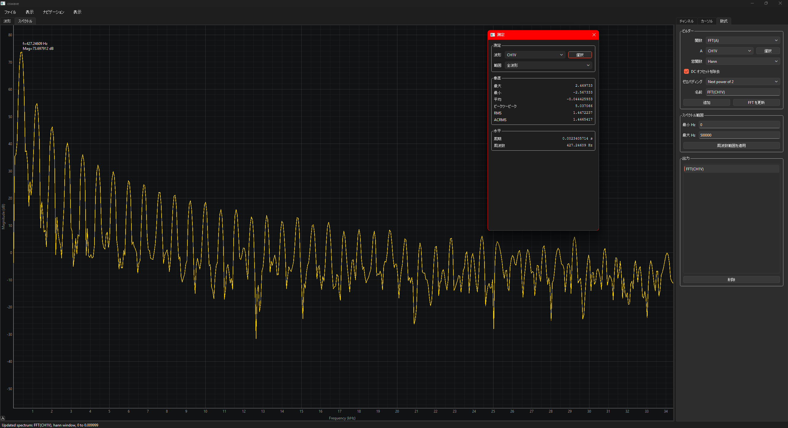
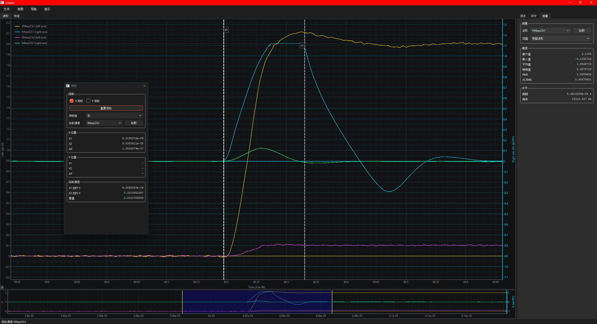
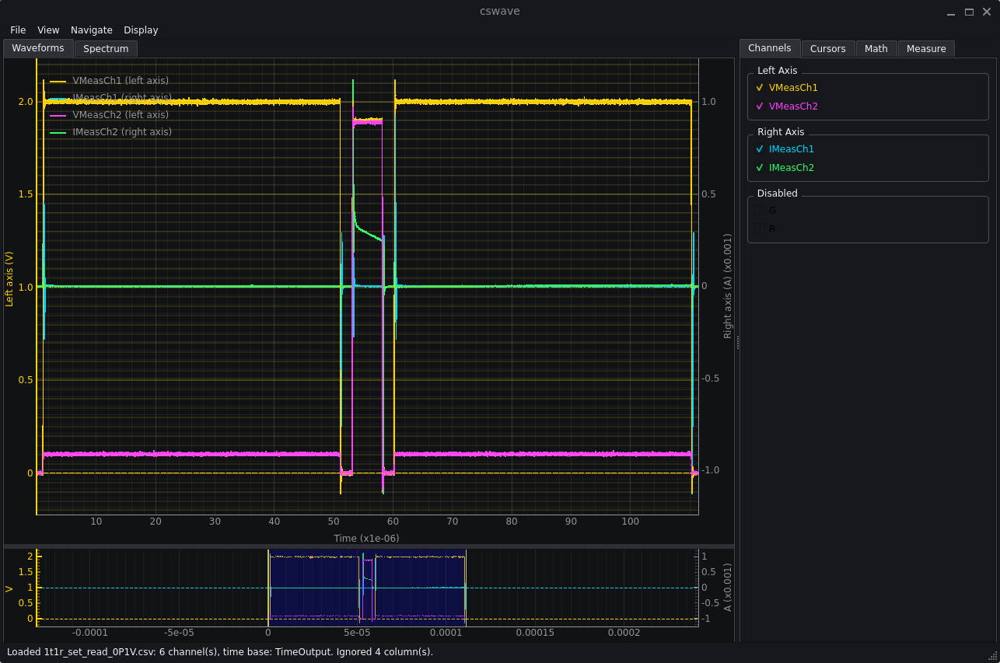

Setup And Run
Install the Python dependencies, then launch the viewer with a CSV or Excel waveform file.
python -m venv .venv
source .venv/bin/activate
pip install -r requirements.txt
python main.py example_csv/1t1r_set_read_0P1V.csvThe app can also open files from File > Open Waveform or by dragging a supported waveform file onto the app window.
Demo



Download And Run
Packaged releases are intended for users who do not want to install Python.
| Platform | How to run |
|---|---|
| Windows | Download cswave-<version>-windows-x64.zip, unzip it, and run cswave.exe. |
| macOS | Download cswave-<version>-macos.zip, unzip it, and open CSV Waveform Viewer.app. If macOS blocks the first launch, use Finder > Open from the context menu. |
| Linux | Download cswave-<version>-linux-x64.tar.gz, extract it, and run cswave/cswave. |
Major Features
- CSV/XLS/XLSX loading with automatic time-base detection and numeric channel filtering.
- Drag-and-drop waveform opening for
.csv,.xls,.xlsx, and.xlsmfiles. - Sheet selection for Excel files with multiple sheets.
- Dual Y axes with independent left/right Y ranges and automatic voltage/current grouping.
- Waveform Setup for selecting the time base and assigning waveforms to left, right, or disabled groups.
- Main waveform plot with X pan/zoom, active-axis Y pan/zoom, preview navigation, trace highlighting, and optional OpenGL rendering.
- Movable X and Y cursors with units, SI scale selection, grouped readouts, and active-channel interpolation.
- Math tab for calculated traces, composable outputs, affine transforms, integral/differential traces, and FFT spectrum analysis.
- Measure tab for multi-signal vertical and frequency readout cards with per-signal scale, range, and detachable floating windows.
Shortcuts And Controls
| Action | Control |
|---|---|
| Open waveform | Ctrl+O / Cmd+O, File > Open Waveform, or drag a waveform file onto the app. |
| Toggle active Y control group | T |
| Reset active view | Ctrl+R / Cmd+R or View > Reset View |
| Toggle X/Y cursors | X and Y |
| Reset cursors | Shift+R or the Cursors tab button. |
| Zoom and pan | Mouse wheel and drag on the main plot; hold Ctrl / Cmd for active Y-axis interaction. |
Waveform Setup
Waveform Setup opens after loading a waveform file and is also available from the View menu. It controls the X-axis time base and each waveform's Y-axis assignment.
| Mode | Behavior |
|---|---|
Time column | Uses a selected numeric column as the X axis. The selected time column is not plotted as a signal. |
Sample rate (Sa/s) | Generates time as sample_index / sample_rate. All valid numeric columns are normal signals. |
Sample interval (s/pt) | Generates time as sample_index * sample_interval. All valid numeric columns are normal signals. |
Sample index | Uses 0, 1, 2, ... as the X axis. All valid numeric columns are normal signals. |
If a detected time column is overridden with a generated time base, that detected column becomes a normal signal that can be assigned to an axis or disabled.
Math
The Math tab creates session-only calculated outputs from loaded waveforms. Time-domain results are added as normal waveform traces, so they appear in the channel list, legend, preview, axis setup, trace highlighting, cursor readouts, and Measure workflows.
Calculated traces can be used as operands for later Math operations, so more complicated expressions can be built by composing several simpler outputs.
| Type | Functions |
|---|---|
| Unary | A^2, sqrt(A), abs(A), log10(A), ln(A), -A, ∫A dt, dA/dt |
| Scalar | a*A+b |
| Binary | A+B, A-B, A*B, A/B |
FFT Spectrum
FFT(A) creates a frequency-domain spectrum from waveform A. Windowing, DC removal, zero padding, and display frequency limits are available from the Math tab. Moving X cursors does not automatically recompute a spectrum; press Update FFT.
Measure
The Measure tab shows reusable cards for one or more waveform signals. Select a signal and press Add, or press Pick and click a trace in the plot. Each card keeps its own range and SI scale settings.
Fullmeasures the complete finite waveform.X cursorsmeasures the sorted interval betweenX1andX2.- Vertical measurements include Max, Min, Avg, Peak-to-peak, RMS, and ACRMS.
- Horizontal measurements include Period and Frequency.
- Double-click a card to detach it, close the floating window to reattach it, and right-click to remove it.
Localization
The GUI uses Qt-native translation support. English is the source language and fallback. Chinese and Japanese translations are included, and the startup language can be selected with --language or from the Display menu.
python main.py --language zh_CN example_csv/1t1r_set_read_0P1V.csvBuilding Releases
Release builds use PyInstaller and include translations, examples, README, and license files. GitHub Actions builds Windows, macOS, and Linux artifacts for release tags. See the release checklist for the full flow.
.\scripts\build_windows.ps1
./scripts/build_macos.sh
./scripts/build_linux.shLicense
CSV Waveform Viewer is released under the MIT License. See LICENSE.